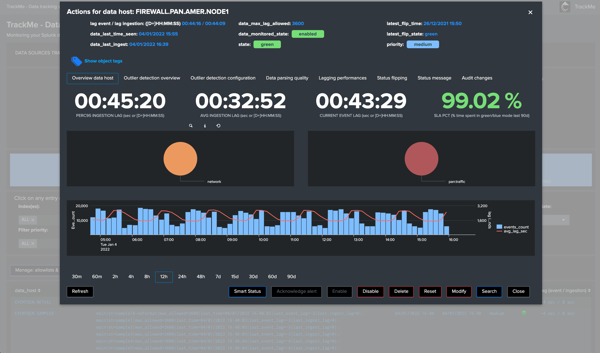
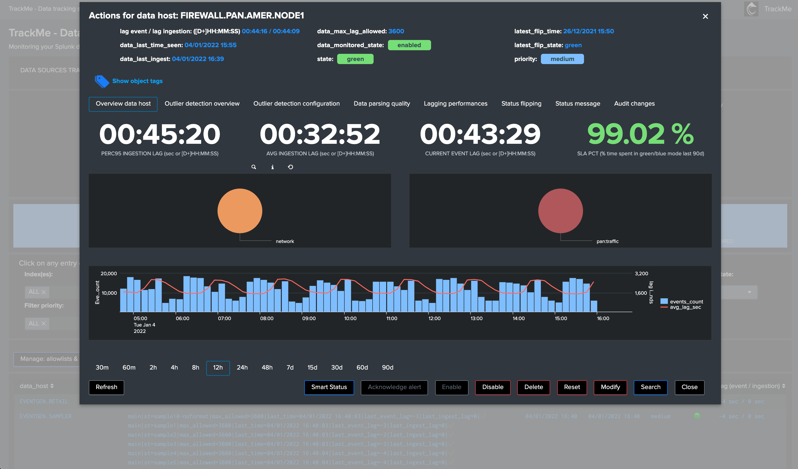

Welcome to TrackMe - Data tracking system for Splunk¶
TrackMe provides automated monitoring and visibility insight of your data sources, with a powerful user interface and workflow for Splunk product owners to detect and alert on lack of availability, abnormal latency, volume outliers detection and quality issues:
Discover and store key states information of data sources, data hosts and metric hosts availability
Track local and remote Splunk deployments at scale, with out the box and custom hybrid models
Provides a powerful user interface to manage activation states, configuration and quickly identify data availability failures
Analyse and detect lack of data and performance lagging of data sources and hosts within your Splunk deployment
Behaviour analytic with outlier detection based on machine learning outliers calculations
Behaviour analytic with data sampling and event format recognition, monitor and detect anomalies in raw events to detect event format changes or misbehaviour based on builtin rules and extended with your own custom rules
Create elastic sources for any kind of custom monitoring requirements based on tstats / raw / mstats / from searches to fullfill any requirements
Record and investigate historical changes of statuses, as well as administrators changes (audit flipping and changes)
Easy administration via graphical human interface from A to Z
No matters the purpose of your Splunk deployment, trackMe will become an essential piece of your deployment, providing key value for PCI or compliance requirements
Keep things under your control and be the first to know when data is not available, get alerted before your users get back to you!

 

{kind=link}
{kind=link}

Why this application?
Splunk administrators and engineers have to spend a good amount of time and energy to on-board and monitor data sources, which becomes more and more complex and time consuming with the explosion of volume and variety of data.
However, it is very frequent to realise after math that something went wrong, for some reason the sender stopped sending, an upgrade broke a configuration, a network rule was lost, an unexpected side effect of a change occurred, parsing issues are not detected…
No administrator should be informed of an issue in the data flow by the customer or the end users, this is why you need pro-activity, costless and scalable availability monitoring.
with the massive amount and variety of data sources, this becomes easily a painful and problematic activity, this application aims to drastically help you in these daily tasks.
TrackMe provides a handy user interface associated with an efficient data discovery, state and alerting workflow.
Made by Splunk admins for Splunk admins, the TrackMe application provides builtin powerful features to monitor and administer you data source monitoring the easy way!
Use cases for TrackMe?
No matters the purpose of your Splunk deployment, trackMe will easily become an essential and positive piece of your Splunk journey:
Security Operation Centers (SOC) with or without Enterprise Security compliance: detect lack of data, abnormal latency potentially impacting your security posture
PCI and compliance: deliver, alert and action
Monitoring and insight visibility about your indexes, sourcetypes, events and metrics
General data activity monitoring and detection of Zombie data
Continous and automated data quality assessment
PII data detection with custom regular expression based rules and data sampling
many more!
Overview:¶
Installation and configuration:¶
Installation and configuration
- Compatibility
- Download
- Deployment & Upgrades
- Installation
- Step 1: Deploy TrackMe
- Step 2: Configure TrackMe to match your needs
- Step 3: RBAC and access policies
- Step 4: Indexers macro definition
- Step 5: host tags enrichment
- Step 6: entities priority management
- Step 7: enabling out of the box alerts or create your own custom alerts
- Final: Read the docs and start using TrackMe
User guide:¶
Usage
- User guide
- Your first steps with TrackMe
- Entities main setting update screens
- Hybrid trackers
- Elastic sources
- Outliers detection and behaviour analytic
- Data sampling and event formats recognition
- Smart Status
- Alerts tracking
- Priority management
- Monitored state (enable / disable buttons)
- Week days monitoring
- Hours ranges monitoring
- Monitoring level
- Maximal lagging value
- Lagging classes
- Allowlisting & Blocklisting
- Resetting collections to factory defaults
- Deletion of entities
- Icon dynamic messages
- Logical groups (clusters)
- Alerting policy for data hosts
- Tags
- Data identity card
- Auditing changes
- Flipping statuses auditing
- Ops: Queues center
- Ops: Parsing view
- Connected experience dashboard for Splunk Mobile & Apple TV
- Team working with trackMe alerts and audit changes flow tracker
- Enrichment tags
- Maintenance mode
- Backup and restore
- Splunk ITSI integration
- Step 1: entity search and creation
- Step 2: create the KPI base search for metrics
- Step 3: create the KPI base searches for summary statuses events
- Step 4: create a service that will be used for the service template definition
- Step 5: create a service template
- Step 6: fine tune thresholds
- Final: Create services business and technical services using TrackMe KPIs
- Cribl LogStream integration
- Monitor Splunk instances forwarding
- REST API Reference Manual
- Introduction
- REST API trackme SPL command
- Authentication
- Postman - API referential and development
- Acknowledgment endpoints
- Data Sources endpoints
- Data Hosts endpoints
- Metric Hosts endpoints
- Elastic Sources endpoints
- Maintenance mode endpoints
- Allow list endpoints
- Block list endpoints
- Logical Groups endpoints
- Data Sampling endpoints
- Data Sampling models endpoints
- Tag policies endpoints
- Lagging classes endpoints
- Lagging classes metrics endpoints
- Smart Status endpoints
- Backup and Restore endpoints
- Identity Cards endpoints
- Hybrid trackers endpoints
Versioning and build history:¶
Versioning